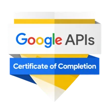
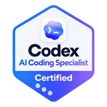
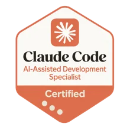

Repetitive manual work
Information is copied between platforms, reports are updated manually, and routine tasks take unnecessary time.
CUSTOM SOFTWARE | WEB APPLICATIONS | BUSINESS AUTOMATION
Custom software, web applications, and integrations that simplify workflows and connect the tools your business uses.




PRACTICAL BUSINESS SOFTWARE
Many businesses rely on multiple tools, spreadsheets, and manual processes to manage daily operations. When these systems don't work together, teams spend more time moving information, checking updates, and repeating tasks.
Information is copied between platforms, reports are updated manually, and routine tasks take unnecessary time.
Off-the-shelf tools may lack the features or flexibility your business actually needs.
Disconnected applications create duplicate work, inconsistent data, and delays in business processes.
Your business may need a dashboard, calculator, client portal, or internal application that existing software cannot adequately provide.
Not every problem requires new software. I assess whether the better solution is an integration, automation, improvement to an existing system, or a custom-built application.
PRACTICAL BUSINESS SOFTWARE
I focus on building practical software that solves specific operational problems and connects with the tools your business already uses.
Develop custom applications and internal tools designed around your business requirements.
Build browser-based applications that allow users to manage information, complete tasks, and interact with business systems.
Connect existing tools and applications to improve how information moves between systems.
Use AI-assisted development workflows to support software implementation, testing, troubleshooting, and improvements.
Improve existing applications through debugging, performance reviews, code improvements, and agreed maintenance work.
Development tools: OpenAI Codex, Claude Code, Git and GitHub. AI tools support development; code quality, testing, security reviews, and delivery requirements still need direct oversight.
My approach is to build the simplest reliable solution that meets your requirements. That may be a small internal tool, an integration between existing platforms, or a complete custom application.
PROPOSED PORTFOLIO · DRAFT FOR REVIEW
My development work includes business applications, connected CRM systems, and reusable development workflows.
Proposed portfolio examples. Actual implementation evidence, project permissions, deployment status, and screenshots remain pending verification.
PROPOSED PORTFOLIO CATEGORY
Development work on a web-based platform designed around entrepreneur and investor interactions, project content, user roles, and communication workflows.
Confirm permission to use the project identity, final implemented features, deployment status, and screenshots before publication.
PROPOSED PORTFOLIO CATEGORY
Implementation work connecting lead capture, CRM pipelines, forms, booking systems, and automation workflows to reduce manual lead management.
Explain which parts were configured using existing platforms and which involved custom code. Do not describe ordinary CRM configuration as custom software engineering.
PROPOSED PORTFOLIO CATEGORY
Internal development tooling and reusable workflows supporting website builds, CRM systems, custom calculators, code organization, and version-controlled projects.
Label this as internal development tooling. Do not present a builder skill or development workflow as a delivered client application without the actual application evidence.
PRACTICAL BUSINESS SOFTWARE
I begin by understanding the business problem before selecting the technology or building the application. The objective is to develop software that is useful, maintainable, and appropriate for the actual requirements.
Review the business objective, existing workflow, required features, users, data, integrations, and technical constraints.
OutputRequirements, application scope, architecture, and implementation priorities.
Develop the agreed application features, interfaces, backend processes, and system integrations. Use version control and appropriate development tools to manage the implementation.
OutputWorking software ready for structured review and testing.
Test essential functionality, user permissions, integrations, error handling, and supported devices. Prepare deployment and handover requirements, then resolve issues identified during testing.
OutputTested application deliverables, deployment support, and agreed documentation.
BEFORE YOU START
I work on selected custom business tools, browser-based applications, dashboards, workflow systems, and integrations. The project scope depends on technical requirements, functionality, complexity, and available resources.
Website development focuses on business websites, content, search visibility, user experience, and conversion. Software development focuses on application functionality, data processing, user interactions, backend systems, and custom business logic. Some projects require both.
Yes. Supported integrations can connect custom tools and applications with CRM workflows, webhooks, APIs, and lead-management systems, subject to the platforms' available capabilities.
Yes. I use tools such as OpenAI Codex and Claude Code to support development, review, debugging, and implementation workflows. AI-assisted development does not replace software testing, security reviews, or responsibility for the final implementation.
Yes, after reviewing the codebase, documentation, technology stack, dependencies, and current issues. The review determines whether the project can be improved directly or requires a more substantial rebuild.
Cost depends on the features, integrations, complexity, security requirements, testing, deployment, and maintenance scope. I review the requirements before recommending an implementation approach and estimating the project.
YOUR NEXT PRACTICAL STEP
Share your business problem, current workflow, and the functionality you need. I'll help evaluate whether custom software, automation, or an existing platform is the most practical solution.
Custom Software · Web Applications · Business Dashboards · API Integrations · Automation